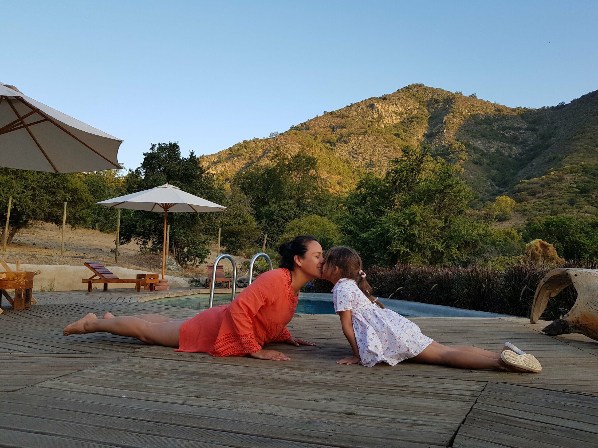

Uno de los 8 peldaños de los Yoga sutras, es la conciencia física enfocada en el trabajo de asanas, donde se busca que su ejecución sea nutritiva e iluminadora.
El trabajo físico concebido desde el yoga, es un accionar consciente en el cual aparece la atención refinada, el encuentro equilibrado entre nuestro cuerpo físico, mental, emocional y espiritual, pudiendo así penetrar de manera mucho más profunda en nuestro ser.
Al momento de trabajar las asanas con nuestros niños y niñas, es de vital importancia educar en relación a nuestro cuerpo físico, ya que de esta manera podremos educar también en relación al cuidado y su respeto.
Lo primero que se necesita, es el conocimiento de aquel vehículo que nos permite disfrutar de las infinitas posibilidades que nos brindan las asanas.
La conciencia corporal comienza en el reconocimiento de la estructura que alberga nuestra alma, valorando cada segmento que la compone. Para esto, el yoga infantil es una oportunidad de conocimiento, donde podemos facilitar experiencias para la profundización anatómica, permitiendo así un desarrollo integral de sus procesos de autoconocimiento.
El conocer sus huesos, músculos, órganos internos y todo lo que anatómicamente somos, despertará aún más la curiosidad por el aprendizaje constante de lo que son.
Es importante considerar que la manera en que debemos hacerlo, dependerá de la edad de los niños/as, ya que esto nos permitirá establecer el objetivo a cumplir.
¿Cómo hacerlo en nuestras clases de yoga?
Puedes hacerlo mediante diversas metodologías, usando canciones, juegos, libros atractivos, videos, cuentos, arte, etc.
Aquí van algunas ideas:
La música es tremendo recurso, donde educamos en contenidos pero además podemos incluir el trabajo corporal, acercándonos al abordaje de asanas:
Los Huesos del Cuerpo - Canciones Infantiles
Yo tengo el Ritmo - Cuerpo Humano
Mediante el trabajo plástico puedes guiar sesiones maravillosas, complementando tu labor como facilitador/a de yoga.
En duplas, puedes pedirles que en cartulinas grandes se dibujen sólo la silueta para que luego cada uno de ellos, completen el nombre de sus huesos, músculos u órganos, dependiendo de tu foco para la clase. Pueden rellenar determinadas partes con papeles reciclados u otro material.
Los cuentos son otro recurso que puedes utilizar en tus clases y que además tienen la posibilidad de ajuste constante, ya que puedes contarlo tu misma/o, mediante una grabación, leerlo, etc.
Cuentos infantiles: El cuerpo humano, mi primer libro de anatomía
Que sea un bonito viaje para sus cuerpos!